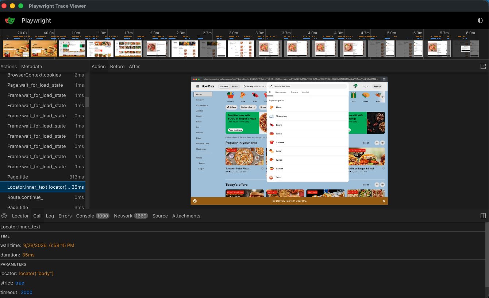
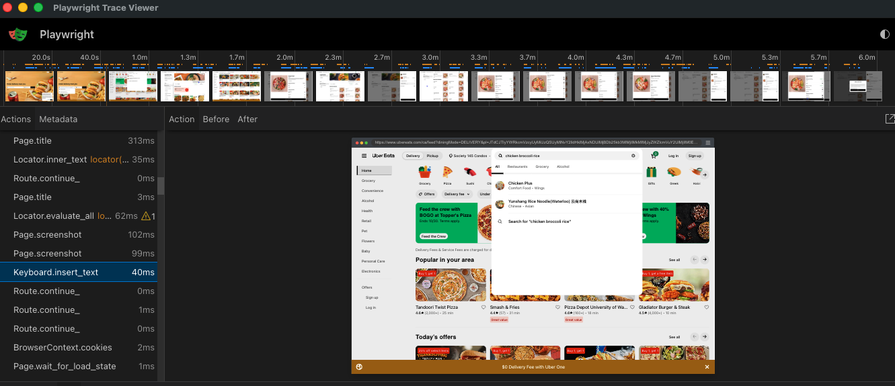
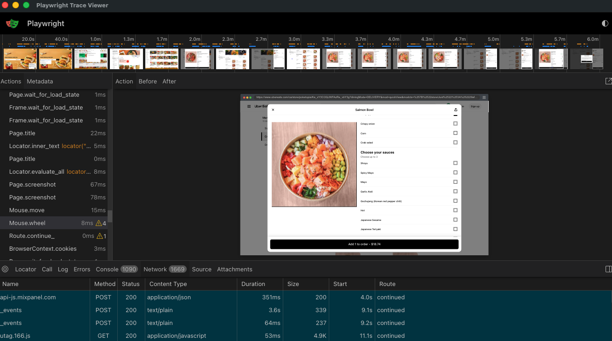

Success signal
1.0
All five gates pass together. No partial credit is exposed to the policy.
A computer-use training environment for agents that search, compare, and enter food orders—reducing the time people spend navigating menus and filling carts by hand.
01 / RUN
The headed browser run is shown at 3× speed with a small set of trace-grounded annotations.
02 / TRACE
Playwright captures the action timeline, before/after screenshots, browser state transitions, and a replayable episode artifact.



03 / VERIFY
Reward is binary: 1.0 only when every success gate passes; otherwise it remains 0.0 and the agent must continue.
Success signal
1.0
All five gates pass together. No partial credit is exposed to the policy.
Additional diagnostics
Safety boundary
The agent may open the cart, but checkout and final-order controls are blocked. The run never confirms an order.
04 / ISOLATE
Each training run launches Chromium inside a disposable Docker environment. The browser is separated from the host, while the OpenAI API key stays in the trusted host process.
05 / LEARN
The trace is useful precisely because the run was imperfect.
Korean Heat looked suitable, but the stored restaurant evidence did not satisfy the configured reputation gate. Reward stayed at 0.0, and the agent removed it.
The agent targeted “View cart.” The control disappeared before execution, so the same coordinates opened Spicy Salmon Bowl instead.
The model attempted to stop twice while reward was 0.0. The orchestration loop rejected both premature completions and instructed it to continue; no false positive reward was issued.